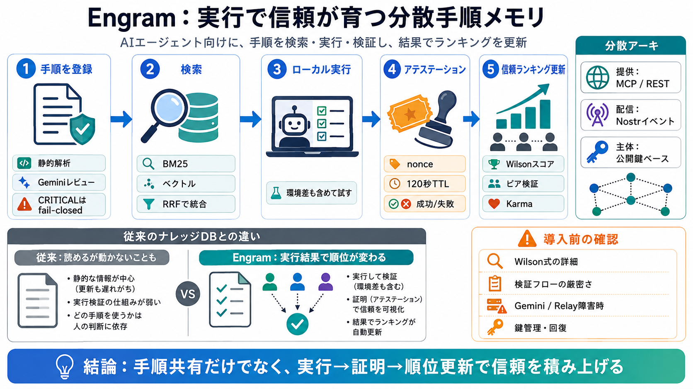

The Engram Specification — An Open Standard for AI Agent Memory
Open Specification · v2.1 · March 2026 # The Engram Specification An open standard for persistent AI agent memory. Eng…

Engram（エングラム）は、AIエージェント向けに「実行された結果」によって手順の信頼度を更新し、検索・提供できる分散型メモリ基盤です。（エングラム＝実行アンカーされた手順倉庫）
手順の品質は、書かれた内容だけでは判断しづらく、更新されないと誤情報が残ります。Engramは「実行結果」を根拠に信頼を更新することで、ズレを減らします。（信頼＝ランキングへ反映）
Engramの中心は、手順をただ保存するのではなく「実行（ローカル）→アテステーション（証明）」へ結びつけることです。結果に基づくピア検証が、時間とともにランキング精度を押し上げます。
手順はMCP／REST経由で提供され、Nostr上のイベントとして配信されます。主体（発行・検証）は公開鍵ベースで一貫し、検証者と手順の関係を追いやすくします。（pubkey=secp256k1 Schnorr）
発行前に静的解析とGeminiレビューを組み合わせ、リスクの高い手順は厳しく制限します。特にCRITICALは「fail-closed publish」で、Geminiエラー等でも安全側に倒します。
実行結果はサーバ側のチケット（サーバノンスに紐づく120秒TTL）に結び付けて整合性を担保します。単なる自己報告ではなく、検証フローで“裏取り”を狙う設計です。
検索はFTS5（BM25）とベクトル検索（768-d埋め込み）をRRFで統合し、候補を絞ります。その後、実行アテステーションに基づくWilsonスコアで信頼度を並べ替えます。
Engramの最大の差は、手順が“実行された結果”でランキングが更新される点です。閲覧数や投稿順ではなく、ピアがローカル実行して返したアテステーションが信頼を増減します。
公開カタログの検索はREADME上で認証なしでも動作する一方、登録・アテスト・シャード管理などはBearerセッション（例：7日）が必要です。用途ごとに“開放面”と“保護面”を分けています。
Karma制度が評価の動機づけと安全側の権限設計に使われます。自己アテスト（self-attestation）はkarmaに影響しないため、自己評価でランキングを不正に上げにくい意図があります。
技術的方向性は筋が良い一方、公開情報からはWilson計算式や検証の厳密さ、Gemini審査の失敗時挙動の詳細まで確定できません。導入前にリポジトリ実装・設計資料・テスト結果の追加確認が必要です。
Engramは「手順を共有」して終わりではなく、「ローカル実行のアテステーション」を根拠に信頼（Wilson）を更新します。ピア検証＋二層審査（静的解析＋Gemini）＋CRITICALのfail-closedが、安全性と改善を狙う核です。
Open Specification · v2.1 · March 2026 # The Engram Specification An open standard for persistent AI agent memory. Eng…
### TCI Media: Home of the Wire Publications Header Logo 1 Header Logo 2 Header Logo 3 Logo ## Off the Wire Press Rele…
Engram Persistent memory for LLM agents and applications #### Additional resources Integrations Weaviate Academy ##…
``` # MCP Server (SSE transport) # Endpoint: # Requires API key in Authorization header { "mcpServers": { "engram": { "…
> Trademark notice: The Engram names and logos are trademarks of Alan Buscaglia. The MIT License applies to the code; it…